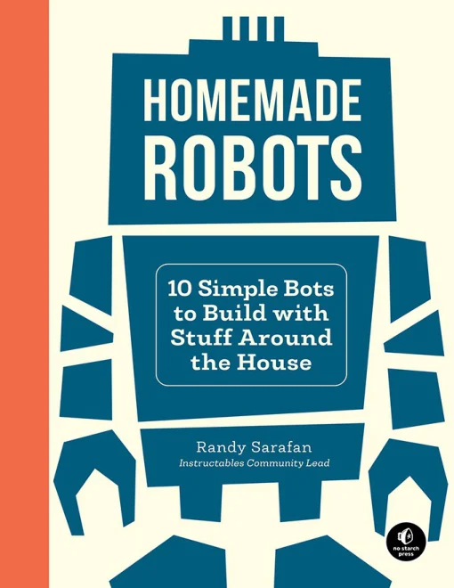

No Starch Press
10 Simple Bots to Build with Stuff Around the House
Randy Sarafan
Ten self-driving bots built from plastic boxes, rulers, coat hooks and continuous servos — no microcontroller needed.
Start reading →